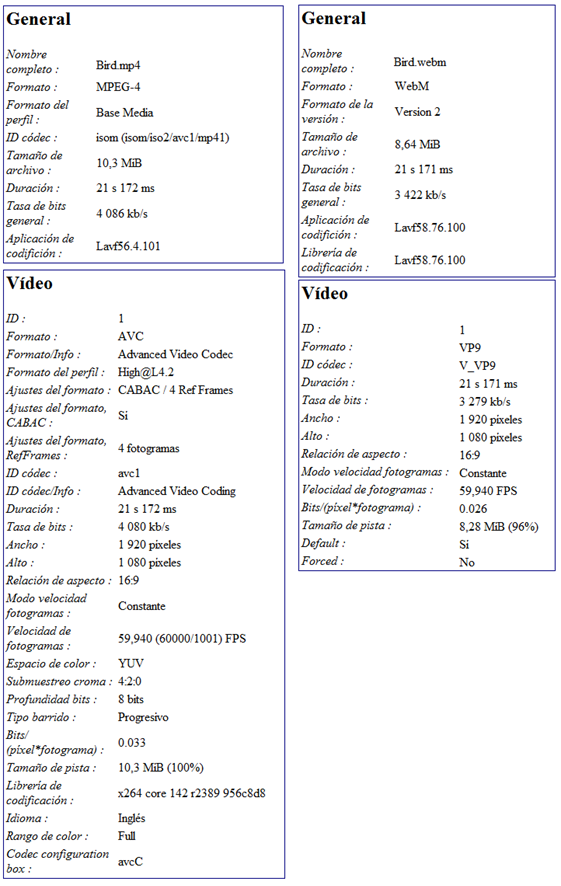

Partiendo de la base de crear un contenido en el formato para que fuese fácilmente reproducible por la mayoría de los navegadores actuales y siguiendo la tabla adjunta de compatibilidad con navegadores:
| Navegador | Versión | Reproductor | Formato |
|---|---|---|---|
| 9 | Windows Media Player | WMV Ogg/Theora y VP8/WebM (*) H.264/MP4 | |
| 10 | xiph | Ogg/Theora y VP8/WebM H.264/MP4 (*) | |
| 17 | ffmpeg | Ogg/Theora y VP8/WebM H.264/MP4 | |
| 5 | QuickTime | H.264/MOV/M4V Ogg/Theora y VP8/WebM (*) | |
| 11 | GStreamer | Ogg/Theora y VP8/WebM | |
| 3 | GStreamer | Ogg/Theora y VP8/WebM H.264/MP4 (*) |
He codificado mi video en formato MP4, WebM y Ogg ya que son los más comunes y soportados por la mayoría de los navegadores, para ello me he valido de la herramienta de avidemux (MP4 y WebM) y un conversor en línea para poder convertirlo a Ogg. El video está realizado con un formato de Full HD de 1920x1080 y una velocidad de refresco de 60 frames/s.
El formato HTML5 permite insertar vídeo directamente, pero existe un inconveniente, no todos los navegadores aceptan todos los formatos de vídeo existentes. De hecho, de los 3 estándares existentes, el único navegador que los acepta a todos es Chrome.
Así que, si queremos que el vídeo se pueda visualizar en todos los navegadores tendremos que añadir el mismo vídeo en distintos los 3 formatos de vídeo estándares con códecs diferentes y que vienen impulsados por grandes empresas.


Para poder publicar mi página web estática he utilizado el CDN de Microsoft Azure. La experiencia para poder publicar está página ha sido realmente sencilla. Ya que con el asistente que proporciona Azure y mi cuenta que ya disponía en GitHub, he podido enlazar el repositorio y el servicio del CDN.
La experiencia a nivel de usuario ha sido positiva, ya que la velocidad de respuesta del vídeo es muy aceptable. No he notado retrasos en la entrega, ni saltos en las imágenes. Todo se comporta de forma muy fluida.
El código HTML estándar para visualizar un único formato de vídeo sería:
<video> <source src="video.ogv" type="video/ogg"/> </video>
<video width="800" height="600" controls autoplay loop poster="fotograma.png"> <source src="video.ogv" type="video/ogg"/> <source src="video.mp4" type="video/mp4"/> <source src="video.webm" type="video/webm"/> <p>Tu navegador no soporta HTML5</p> </video>
Analizando los servicios que tiene
Microsoft Azure dentro del apartado de Inteligencia Artificial, he
encontrado diversos servicios aplicables en el campo de la publicación y
distribución.
Computer Vision: Servicio que
analiza el contenido de imágenes y vídeos, lo que permite la extracción
automática de texto, etiquetar objetos, generar descripciones de
imágenes, moderar contenido y reconocer el movimiento de personas en
espacios físicos.
Custom Vision: permite la
clasificación de imágenes y la detección de objetos.
Form Recognizer: extrae con precisión texto, los pares clave-valor, tablas y las estructuras de los documentos.
Language Understanding:
comprende el lenguaje natural para interpretar los objetivos del usuario
y extrae información clave de frases conversacionales.
Content Moderator: en pocas
palabras un sistema de censura automática.
API de Face: Las
características incluyen la detección de caras que percibe
características y atributos faciales (como una mascarilla, gafas o la
ubicación de la cara) en una imagen y la identificación de una persona
por una coincidencia con su repositorio privado o por el identificador
de la foto.
Lectores inmersivos: ayuda a los usuarios de cualquier edad y capacidad de lectura con herramientas y características de lectura, como la lectura leer en voz alta, la traducción a diversos idiomas y el resaltado y otros elementos de diseño para centrar la atención.
Recortes de pantalla con el report
de Media Info:
El receptor tarda unos segundos en parar y eso es debido a que consume la información que dispone en el buffer de datos, este buffer sirve para evitar contratiempos de cortes breves en la emisión por problemas de paquetes perdidos en la transmisión que el emisor deberá repetir. Esto permite que el espectador tenga una sensación de video fluida. Lo mismo pasa al revés, cuando reiniciamos la emisión, esta tarda unos segundos en aparecer ya que se tiene que llenar el buffer necesario por el receptor.
Si la tasa de transferencia es de 1024Kbps y el video está codificado a 5000Kbps, la transcodificación que tiene que realizar el emisor es de aproximadamente 4,9Kbps.
Azure Media Services es una plataforma basada en la nube que permite construir soluciones de video en streaming de banda ancha para mejorar la accesibilidad y la distribución de contenidos, además analiza y lo transcribe para un mejor acceso a tiempo real.
Servicio destinado a desarrolladores de aplicaciones, centro de llamadas, agencias gubernamentales o empresas de entretenimiento, que ayuda a crear aplicaciones que ofrecen experiencias multimedia de calidad excepcional a grandes audiencias, en los navegadores y dispositivos móviles más populares de la actualidad.
Permite crear una gran variedad de flujos de trabajo de medios en la nube. Algunos ejemplos de lo que puede hacer con Media Services incluyen:
Información general de Streaming en vivo
Participan los siguientes componentes:
El servicio permite hacer lo siguiente:
Puntos de conexión de streaming, canales y programas
En Azure Media Services, los canales, programas y extremos de streaming controlan todas las funcionalidades de streaming en vivo, incluidas la recopilación, el formato, DVR, la seguridad, la escalabilidad y la redundancia. Un canal representa una canalización para procesar contenido de streaming en vivo y permite recibir transmisiones de entrada en directo de la siguiente manera:
Puede especificar la forma en que el canal recibe el flujo de entrada y si quiere que realice la codificación en directo de la secuencia, para ello tienes dos opciones:
Estados del canal y cómo se asignan al modo de facturación
El estado actual de un canal. Los valores posibles son: